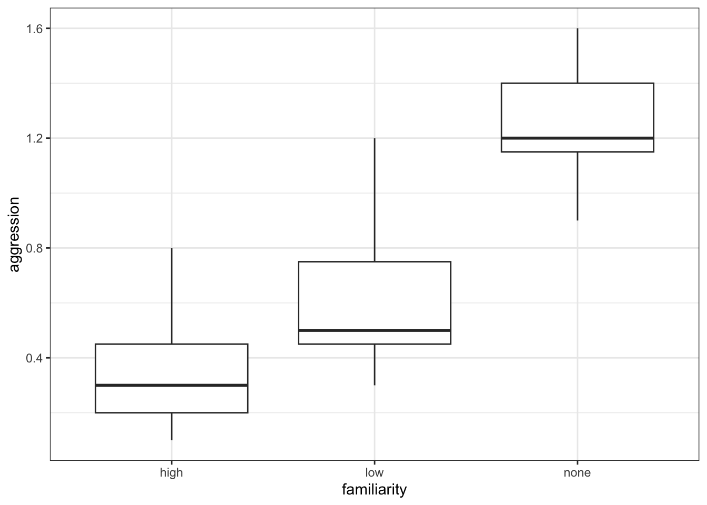

Kruskal-Wallis
Questions
- How do I analyse multiple samples of continuous data if the data are not normally distributed?
- What is a Kruskal-Wallis test?
- How do I check for differences between groups?
Objectives
- Be able to perform an Kruskal-Wallis test in R
- Understand the output of the test and evaluate the assumptions
- Be able to perform post-hoc testing after a Kruskal-Wallis test
Purpose and aim
The Kruskal-Wallis one-way analysis of variance test is an analogue of ANOVA that can be used when the assumption of normality cannot be met. In this way it is an extension of the Mann-Whitney test for two groups.
Libraries and functions
Libraries
Functions
# Performs a Kruskal-Wallis test
rstatix::kruskal_test()
# Performs Dunn's test for pairwise multiple comparisons of the ranked data
rstatix::dunn_test()Libraries
# Library for performing Dunn's test
library(dunn.test)Functions
# Performs a Kruskal-Wallis test
kruskal.test()
# Performs Dunn's test for pairwise multiple comparisons of the ranked data
dunn.test()Data and hypotheses
For example, suppose a behavioural ecologist records the rate at which spider monkeys behaved aggressively towards one another as a function of closely related the two monkeys are. The familiarity of the two monkeys involved in each interaction is classified as high, low or none. We want to test if the data support the hypothesis that aggression rates differ according to strength of relatedness. We form the following null and alternative hypotheses:
- \(H_0\): The median aggression rates for all types of familiarity are the same
- \(H_1\): The median aggression rates are not all equal
We will use a Kruskal-Wallis test to check this.
The data are stored in the file data/CS2-spidermonkey.csv.
Summarise and visualise
First we read the data in:
spidermonkey <- read_csv("data/CS2-spidermonkey.csv")# look at the data
spidermonkey# A tibble: 21 × 3
id aggression familiarity
<dbl> <dbl> <chr>
1 1 0.2 high
2 2 0.1 high
3 3 0.4 high
4 4 0.8 high
5 5 0.3 high
6 6 0.5 high
7 7 0.2 high
8 8 0.5 low
9 9 0.4 low
10 10 0.3 low
# … with 11 more rows# summarise the data
spidermonkey %>%
select(-id) %>%
group_by(familiarity) %>%
get_summary_stats(type = "common")# A tibble: 3 × 11
familiarity variable n min max median iqr mean sd se ci
<chr> <chr> <dbl> <dbl> <dbl> <dbl> <dbl> <dbl> <dbl> <dbl> <dbl>
1 high aggression 7 0.1 0.8 0.3 0.25 0.357 0.237 0.09 0.219
2 low aggression 7 0.3 1.2 0.5 0.3 0.629 0.315 0.119 0.291
3 none aggression 7 0.9 1.6 1.2 0.25 1.26 0.23 0.087 0.213# create boxplot
spidermonkey %>%
ggplot(aes(x = familiarity, y = aggression)) +
geom_boxplot()
First we read the data in:
spidermonkey <- read.csv("data/CS2-spidermonkey.csv")# look at the data format
head(spidermonkey) id aggression familiarity
1 1 0.2 high
2 2 0.1 high
3 3 0.4 high
4 4 0.8 high
5 5 0.3 high
6 6 0.5 high# summarise the data
aggregate(aggression ~ familiarity, data = spidermonkey, summary) familiarity aggression.Min. aggression.1st Qu. aggression.Median
1 high 0.1000000 0.2000000 0.3000000
2 low 0.3000000 0.4500000 0.5000000
3 none 0.9000000 1.1500000 1.2000000
aggression.Mean aggression.3rd Qu. aggression.Max.
1 0.3571429 0.4500000 0.8000000
2 0.6285714 0.7500000 1.2000000
3 1.2571429 1.4000000 1.6000000# create boxplot
boxplot(aggression ~ familiarity, data = spidermonkey)
The data appear to show a very significant difference in aggression rates between the three types of familiarity. We would probably expect a reasonably significant result here.
Assumptions
To use the Kruskal-Wallis test we have to make three assumptions:
- The parent distributions from which the samples are drawn have the same shape (if they’re normal then we should use a one-way ANOVA)
- Each data point in the samples is independent of the others
- The parent distributions should have the same variance
Independence we’ll ignore as usual. Similar shape is best assessed from the earlier visualisation of the data. That means that we only need to check equality of variance.
Equality of variance
We test for equality of variance using Levene’s test (since we can’t assume normal parent distributions which rules out Bartlett’s test).
# perform Levene's test
spidermonkey %>%
levene_test(aggression ~ familiarity)Warning in leveneTest.default(y = y, group = group, ...): group coerced to
factor.# A tibble: 1 × 4
df1 df2 statistic p
<int> <int> <dbl> <dbl>
1 2 18 0.114 0.893The relevant p-value is given in the p column (0.893). As it is quite large we see that each group do appear to have the same variance.
There is also a warning about group coerced to factor. There is no need to worry about this - Levene’s test needs to compare different groups and because aggression is encoded as a numeric value, it converts it to a categorical one before running the test.
Levene’s test is not included in the default R packages and may require the installation of an additional package called car (Companion to Applied Regression).
To install the car package, run the following command in your console:
install.packages("car")Alternatively, go to Tools > Install packages… > Packages, type in car and press Install
Remember to load the library with library(car).
Perform Levene’s test on the data:
leveneTest(aggression ~ familiarity, data = spidermonkey)Warning in leveneTest.default(y = y, group = group, ...): group coerced to
factor.Levene's Test for Homogeneity of Variance (center = median)
Df F value Pr(>F)
group 2 0.1139 0.893
18 The relevant p-value is given on the 3rd line (Pr(>F) = 0.893). As it is quite large we see that each group do appear to have the same variance.
There is also a warning about group coerced to factor. There is no need to worry about this - Levene’s test needs to compare different groups and because aggression is encoded as a numeric value, it converts it to a categorical one before running the test.
Implement and interpret the test
Perform a Kruskal-Wallis test on the data:
# implement Kruskal-Wallis test
spidermonkey %>%
kruskal_test(aggression ~ familiarity)# A tibble: 1 × 6
.y. n statistic df p method
* <chr> <int> <dbl> <int> <dbl> <chr>
1 aggression 21 13.6 2 0.00112 Kruskal-Wallis- The
kruskal_test()takes the formula in the following format:variable ~ category
The p-value is given in the p column. This shows us the probability of getting samples such as ours if the null hypothesis were actually true.
kruskal.test(aggression ~ familiarity, data = spidermonkey)
Kruskal-Wallis rank sum test
data: aggression by familiarity
Kruskal-Wallis chi-squared = 13.597, df = 2, p-value = 0.001115- The first argument must be in the formula format:
variable ~ category - If the data are stored in stacked format, then the second argument must be the name of the data frame
The p-value is given in the 3rd line. This shows us the probability of getting samples such as ours if the null hypothesis were actually true.
Since the p-value is very small (much smaller than the standard significance level of 0.05) we can say “that it is very unlikely that these three samples came from the same parent distribution and as such we can reject our null hypothesis” and state that:
A one-way Kruskal-Wallis rank sum test showed that aggression rates between spidermonkeys depends upon the degree of familiarity between them (KW = 13.597, df = 2, p = 0.0011).
Post-hoc testing (Dunn’s test)
The equivalent of Tukey’s range test for non-normal data is Dunn’s test.
Dunn’s test is used to check for significant differences in group medians:
# A tibble: 3 × 9
.y. group1 group2 n1 n2 statistic p p.adj p.adj.signif
* <chr> <chr> <chr> <int> <int> <dbl> <dbl> <dbl> <chr>
1 aggression high low 7 7 1.41 0.160 0.160 ns
2 aggression high none 7 7 3.66 0.000257 0.000771 ***
3 aggression low none 7 7 2.25 0.0245 0.0490 * The dunn_test() function performs a Kruskal-Wallis test on the data, followed by a post-hoc pairwise multiple comparison.
The comparison between the pairs of groups is reported in the table at the bottom. Each row contains a single comparison. We are interested in the p and p.adj columns, which contain the the p-values that we want. This table shows that there isn’t a significant difference between the high and low groups, as the p-value (0.1598) is too high. The other two comparisons between the high familiarity and no familiarity groups and between the low and no groups are significant though.
The dunn_test() function has several arguments, of which the p.adjust.method is likely to be of interest. Here you can define which method needs to be used to account for multiple comparisons. The default is "holm". We’ll cover more about this in the chapter on Power analysis.
Dunn’s test is also not included in the default R packages and may require the installation of an additional package called dunn.test.
To install the dunn.test package, run the following command in your console:
install.packages("dunn.test")Alternatively, go to Tools > Install packages… > Packages, type in dunn.test and press Install
Remember to load the library with library(dunn.test).
Test for a significant difference in group medians:
dunn.test(spidermonkey$aggression, spidermonkey$familiarity,
altp = TRUE) Kruskal-Wallis rank sum test
data: x and group
Kruskal-Wallis chi-squared = 13.5972, df = 2, p-value = 0
Comparison of x by group
(No adjustment)
Col Mean-|
Row Mean | high low
---------+----------------------
low | -1.405820
| 0.1598
|
none | -3.655132 -2.249312
| 0.0003* 0.0245*
alpha = 0.05
Reject Ho if p <= alphaNote that Dunn’s test requires us to enter two arguments, the first is the vector of values and the second is the vector containing the category labels (i.e. the factor).
You can see that the dunn.test() function also performs a Kruskal-Wallis test on the data, and these results are reported initially.
The comparison between the pairs of groups is reported in the table at the bottom. Each cell in the table has two rows. The bottom row contains the p-values that we want. This table shows that there isn’t a significant difference between the high and low groups, as the p-value (0.1598) is too high. The other two comparisons between the high familiarity and no familiarity groups and between the low and no groups are significant though.
Exercise: Lobster weight (revisited)
Perform a Kruskal-Wallis test and do a post-hoc test on the lobster data set.
Hypothesis
- \(H_0\) : all medians are equal
- \(H_1\) : not all medians are equal
Import data, summarise and visualise
All done previously.
All done previously.
Assumptions
From before, since the data are normal enough they are definitely similar enough for a Kruskal-Wallis test and they do all have equality of variance from out assessment of the diagnostic plots. For completeness though we will look at Levene’s test.
lobsters %>%
levene_test(weight ~ diet)# A tibble: 1 × 4
df1 df2 statistic p
<int> <int> <dbl> <dbl>
1 2 15 0.00280 0.997leveneTest(weight ~ diet, data = lobsters)Levene's Test for Homogeneity of Variance (center = median)
Df F value Pr(>F)
group 2 0.0028 0.9972
15 Given that the p-value is so high, this again agrees with our previous assessment that the equality of variance assumption is well met. Rock on.
Kruskal-Wallis test
So, we perform the Kruskall-Wallis test.
# implement Kruskal-Wallis test
lobsters %>%
kruskal_test(weight ~ diet)# A tibble: 1 × 6
.y. n statistic df p method
* <chr> <int> <dbl> <int> <dbl> <chr>
1 weight 18 3.26 2 0.196 Kruskal-Walliskruskal.test(weight ~ diet, data = lobsters)
Kruskal-Wallis rank sum test
data: weight by diet
Kruskal-Wallis chi-squared = 3.2565, df = 2, p-value = 0.1963A Kruskal-Wallis test indicated that the median weight of juvenile lobsters did not differ significantly between diets (KW = 3.26, df = 2, p = 0.20).
Post-hoc testing
In this case we should not be doing any post-hoc testing, because we did not detect any statistically significant differences. Doing so anyway and then reporting any incidental groups that would differ, would be p-hacking.
Key points
- We use a Kruskal-Wallis test to see if there is a difference in medians between multiple continuous response variables
- We assume parent distributions have the same shape; each data point is independent and the parent distributions have the same variance
- We test for equality of variance using Levene’s test
- Post-hoc testing to check for significant differences in the group medians is done with Dunn’s test